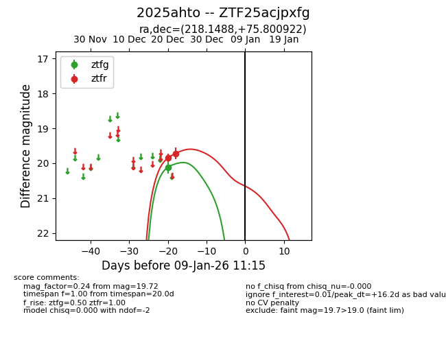
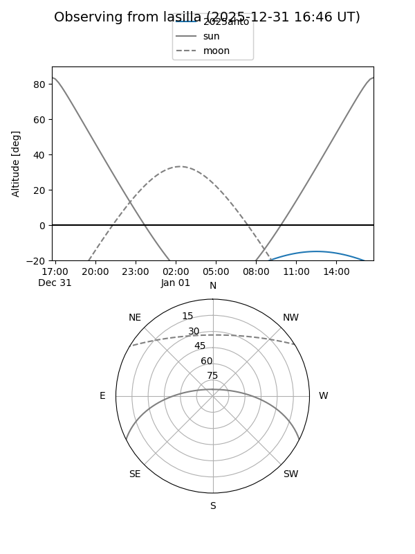
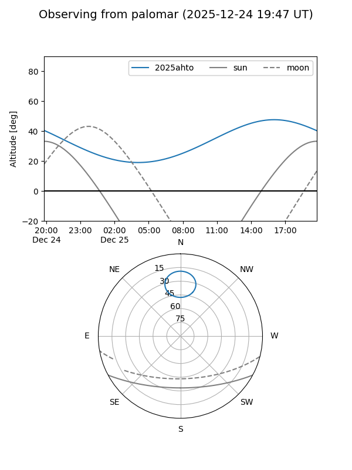
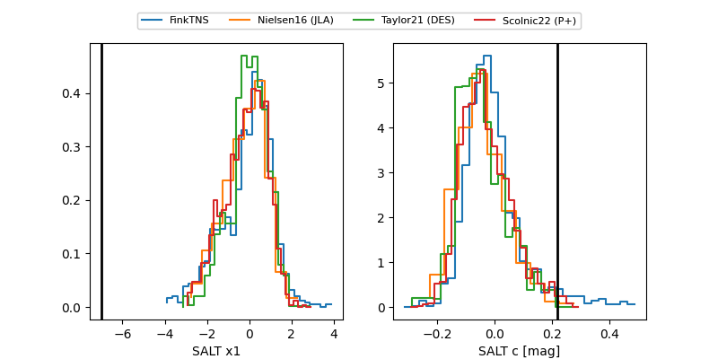

2025ahto
Target 2025ahto at 2025-12-31 17:00
Aliases and brokers:
FINK:
Lasair:
ALeRCE:
TNS:
YSE:
alt names
ZTF25acjpxfg (ztf,fink_ztf)
2025ahto (tns,yse)
Coordinates:
equatorial (ra, dec) = 218.1488,+75.80092
equatorial (HMS+DMS) = 14:32:35.70,+75:48:03.32
galactic (l, b) = (115.0987,+39.74992)
Flags:
Photometry:
last ztfg=20.11, ztfr=19.72
1 ztfg, 2 ztfr detections
Lightcurve

Visibility


Additional plots
